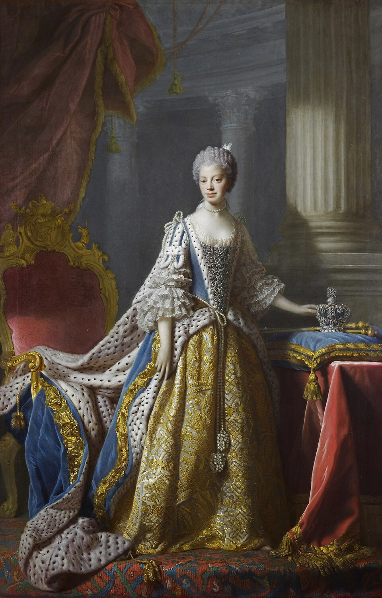
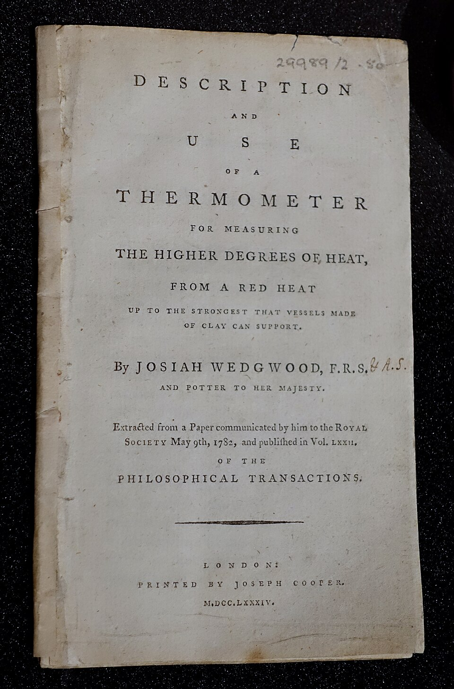
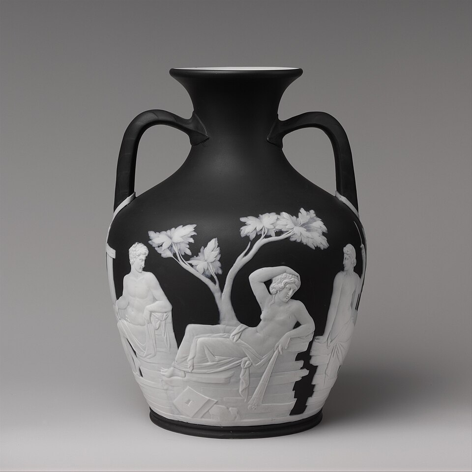
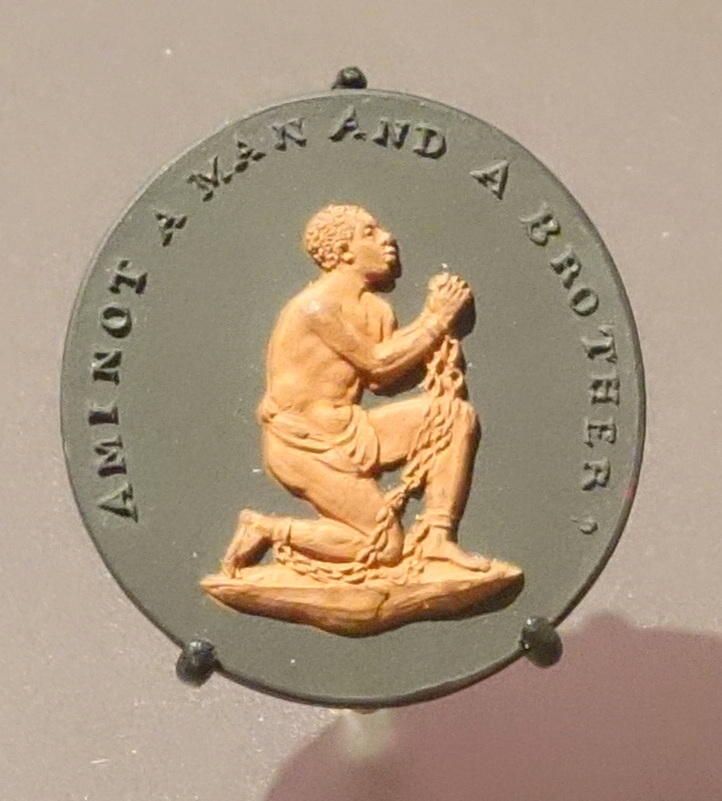
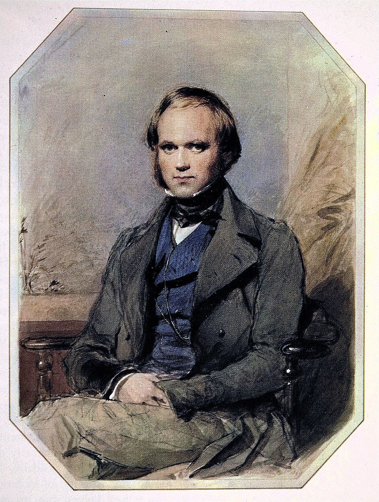

마케팅의 역사를 공부하다 보면 의외의 인물을 만나게 된다. 18세기 영국의 도자기 사업가 조시아 웨지우드(Josiah Wedgwood, 1730~1795)다.
마케팅이라면 코카콜라, 나이키, 애플이 먼저 떠오르는데 왜 하필 250년도 더 된 영국의 도자기 장수일까?
그의 인생부터 흥미롭다. 대대로 도자기를 만들던 집안에서 태어나 어린 시절 천연두로 다리를 크게 다쳤고, 결국 한쪽 다리를 잃었다. 그런데도 중국 자기를 동경하던 유럽에서 새로운 도자기를 개발했고, 영국 왕비의 이름을 제품에 붙였으며, 러시아 황제부터 아메리카 식민지 고객까지 시장을 넓혀 영국 최상위 부자 중 한 명이 되었다.
여기서 끝이 아니다. 그의 외손자가 찰스 다윈이다. 도자기 장수와 진화론이 어떻게 이어지는지는 뒤에서 보기로 하고, 먼저 그가 왜 “현대 마케팅의 선구자”로 불리는지부터 따라가 보자.
이 글에서 확인할 마케팅 개념
제품 차별화가치 제안브랜드 스토리텔링후광 효과STP가격 전략브랜드 일관성지각된 위험유통4P01도자기 마을에서 태어난 소년
웨지우드는 1730년 영국 중부 스태퍼드셔의 작은 마을 버슬럼(Burslem)에서 열세 번째 아이로 태어났다. 이 일대는 오늘날 스토크온트렌트(Stoke-on-Trent)에 속하며, 도자기 공방이 몰려 있어 ‘The Potteries’라 불렸다. 증조할아버지 때부터 도공 집안이었다.
아홉 살에 아버지를 여의고 형 토머스의 공방에서 도제로 일을 배웠다. 그런데 열두 살 무렵 앓은 천연두가 오른쪽 무릎에 후유증을 남겼다. 발로 물레를 돌려야 하는 도공에게 치명적인 일이었고, 1768년에는 결국 오른쪽 다리를 절단했다.
역설적으로 이 장애가 그의 방향을 바꾸었다. 물레 앞에서 흙을 빚는 일 대신 재료, 유약, 가마의 온도, 디자인을 연구하는 일에 몰두했기 때문이다. 어떤 흙을 섞어야 원하는 색이 나오는지, 몇 도에서 구워야 하는지를 수없이 실험하고 기록했다. 훗날 그가 만든 파란색 하나를 위해서만 3,000개가 넘는 시료를 실험했다고 전해진다.
02중국 자기를 흉내 내지 않고, 다른 길을 찾다
당시 유럽 최고의 도자기는 중국산이었다. 얇고 단단하면서 빛이 은은히 비치는 백자는 오늘날의 명품 가방이나 시계처럼 부와 교양을 보여주는 물건이었다. 영국 도공들도 이를 만들고 싶어 했지만 재료와 기술이 달랐고 비용도 높았다.
웨지우드는 접근을 바꾸었다. 굳이 중국 자기를 똑같이 만들 필요가 있을까? 아름답고 실용적이면서 값이 저렴하면 충분히 경쟁할 수 있지 않을까?
그는 영국에서 만들던 크림색 도기(Creamware)를 집요하게 개선했다. 그 결과 매끄럽고 세련되면서도 비교적 싸게 대량 생산할 수 있는 식기가 나왔다.
짚고 넘어갈 점
웨지우드가 만든 것은 중국 백자와 같은 자기(porcelain)가 아니라 크림색 도기였다. 크림색 도기 자체도 그가 처음 발명한 것이 아니라 그가 완성도를 끌어올린 것이다. 영국의 본차이나(Bone China)도 그의 발명이 아니며, 웨지우드 회사는 그의 사후에 이를 생산하기 시작했다. 그가 대단했던 이유는 복제가 아니라, 소비자가 원하는 아름다움과 실용성을 더 싼 재료와 기술로 제공했기 때문이다. 제품 차별화 가치 제안03왕비가 쓴 찻잔에 ‘여왕의 도자기’라는 이름을 붙이다
1760년대 중반 웨지우드는 조지 3세의 왕비 샬럿에게 찻잔 세트를 납품했다. 왕비는 그의 크림색 도기를 ‘Queen’s Ware(여왕의 도자기)’라고 부르는 것을 허락했고, 웨지우드는 이 왕실과의 관계를 서류와 편지지에까지 드러냈다. 1784년 그가 왕립학회에 보고한 글의 표지에도 이름 뒤에 “Potter to Her Majesty(왕비 폐하의 도공)”가 붙어 있다.


생각해 보자. 어제까지 평범한 식기였던 제품에 왕비의 이름이 붙으면 무엇이 달라질까? 재료도 강도도 그대로다. 그런데 소비자가 느끼는 가치는 달라진다. “왕비가 쓰는 그릇이라면 나도 하나쯤…” 하는 마음이 생기기 때문이다.
오늘날 유명 배우가 든 가방이나 스타 선수가 신은 운동화가 특별해지는 것과 같은 원리다. 마케팅에서는 유명인 보증후광 효과브랜드 포지셔닝으로 설명한다.
04왕실의 이름을 중산층의 식탁으로
당시 영국에서는 상업과 산업이 발달하면서 경제력을 갖춘 중산층이 늘고 있었다. 이들은 귀족은 아니었지만 귀족처럼 살고 싶어 했다. 좋은 식기로 차려 낸 식탁은 세련된 삶의 표지였다.
웨지우드는 왕실의 이름으로 명성을 쌓은 뒤, 상대적으로 값싼 크림색 도기를 더 넓은 고객층에 팔았다. 역사학자 닐 맥켄드릭(Neil McKendrick)은 이런 흐름을 상류층을 따라 하려는 모방 소비로 설명했는데, 오늘날에는 이 해석을 전부 받아들이기보다 하나의 유력한 설명으로 본다.
중요한 점은 웨지우드가 가격과 대상을 처음부터 고정하지 않았다는 것이다. 유행이 지나가고 시장이 넓어지면 판매 전략도 함께 바꿨다. 시장세분화표적시장 선정가격 전략을 떠올릴 수 있는 대목이다.
05같은 공장, 서로 다른 이야기: Queen’s Ware와 Jasperware
모든 고객이 왕실의 식기를 원하는 것은 아니었다. 그 무렵 유럽에서는 고대 그리스·로마를 동경하는 신고전주의가 유행했다. 웨지우드는 이 흐름을 읽고 1770년대에 새 소재를 내놓았다. 연한 파란색 바탕에 흰색 고전 장식을 입체로 붙인 재스퍼웨어(Jasperware), 이른바 ‘웨지우드 블루’다.

| Queen’s Ware | Jasperware | |
|---|---|---|
| 이야기 | 왕실의 품격, 세련된 식탁 | 고대 그리스·로마의 예술, 교양과 취향 |
| 구매 이유 | 일상에서 누리는 우아함 | 예술적 취향과 장식적 아름다움 |
| 마케팅 개념 | 후광 효과, 포지셔닝 | 심리적 세분화, 차별화 |
물론 고객층이 칼같이 나뉜 것은 아니다. 귀족도 Queen’s Ware를 샀고 중산층도 재스퍼웨어를 살 수 있었다. 핵심은 소비자가 같은 도자기를 사는 이유가 서로 다를 수 있음을 이해하고, 그에 맞는 제품과 의미를 제공했다는 것이다. 제품의 기능은 비슷해도 소비자가 사는 가치는 다르다. 오늘날의 심리적 세분화(Psychographic Segmentation)가 바로 이것이다.
06수익은 거의 없었지만 가장 값진 주문: 러시아 황제의 ‘개구리 식기’
1773년 러시아 예카테리나 2세는 웨지우드에 대형 식기 세트를 주문했다. 궁전 이름(핀란드어로 ‘개구리 늪’)을 따서 초록 개구리 문양을 넣고, 식기마다 영국의 풍경을 손으로 그린 ‘Frog Service’다. 구성은 약 950점, 그려 넣은 풍경은 1,200여 점에 이르렀다. 놀라운 점은 왕실용 대형 식기가 대개 자기였는데, 이 세트는 웨지우드의 Queen’s Ware로 만들어졌다는 것이다.

재미있는 것은 돈이다. 웨지우드가 받은 금액은 2,700파운드 남짓인데 직접 들어간 비용이 2,600파운드가 넘었다. 수익은 거의 없었다. 하지만 1774년 6월 런던 쇼룸에서 세트를 먼저 전시했고, 관람료를 받을 만큼 사람이 몰렸다. 러시아 황제가 주문한 식기를 직접 볼 수 있다는 사실이 그 자체로 광고였다. 홍보 효과가 이익보다 더 컸던 주문이다.
07일관된 품질이 브랜드를 만든다
웨지우드의 혁신은 제품과 이미지에서 끝나지 않았다. 1769년 에트루리아(Etruria)에 새 공장을 세우고 공정을 분업해 품질을 일정하게 관리했다. 장인 한 사람이 처음부터 끝까지 만들던 방식에서는 접시마다 크기와 색이 조금씩 달라지기 쉽다.
런던의 고객이 접시 여섯 장을 주문했는데 모양이 모두 다르다면? 깨진 접시를 다시 주문했는데 전혀 다른 접시가 온다면? 소비자는 그 브랜드를 믿기 어렵다. 같은 품질을 다시 살 수 있어야 반복 구매가 생긴다. 웨지우드는 브랜드가 약속한 품질을 생산 시스템으로 뒷받침했다. 오늘날 브랜드의 핵심 가치인 일관성(Consistency)이다.
그는 제품에 자기 이름도 새겼다. 마음에 든 제품을 다음에 다시 찾으려면 만든 사람의 이름이 보여야 하기 때문이다. 상표를 처음 쓴 사람이 웨지우드는 아니다. 그러나 이름을 품질과 명성에 이어 붙여 세계적 브랜드로 키웠고, 지금까지 ‘웨지우드’라는 이름이 고급 도자기의 상징으로 남아 있다.
영상: The Making Of Wedgwood (1958), British Pathé. 20세기 중반 웨지우드 공장의 제작 과정을 볼 수 있다.
0818세기의 카탈로그, 쇼룸, 환불 보장
웨지우드는 판매 방식도 새로 짰다. 1773년에는 도자기 형태를 그림으로 보여주는 삽화 카탈로그를 냈고, 런던을 비롯한 여러 도시에 쇼룸과 창고를 열었다. 새 상품은 일부러 시점을 조절해 풀었다. 우편으로 견본과 홍보물을 보냈고, 무료 배송과 환불 보장, 구매 조건 행사까지 활용했다. 오늘날 쇼핑몰이 하는 일과 놀랄 만큼 비슷하다.
도자기는 깨지기 쉽고 마음에 들지 않을 수도 있다. 고객은 불안하다. 마케팅에서는 이 불확실성을 지각된 위험(Perceived Risk)이라고 한다. 무료 배송, 파손품 교환, 환불 보장은 그 위험을 줄여 구매를 쉽게 만든다.
09도자기를 팔기 위해 운하를 파다
사업이 커지자 물류가 문제였다. 공장이 있는 스태퍼드셔는 내륙이었고 길은 험했으며 도자기는 이동 중에 잘 깨졌다. 웨지우드는 트렌트 머지 운하(Trent and Mersey Canal) 건설을 앞장서 지지했다. 운하는 1777년에 완성되어 그의 에트루리아 공장 바로 옆을 지났다. 원료와 완제품을 더 싸고 안전하게 옮길 수 있게 된 것이다.
오늘날 기업이 물류센터와 배송망에 투자하는 이유와 같다. 좋은 제품만으로는 부족하고, 고객이 원하는 때 원하는 곳에서 살 수 있어야 한다. 웨지우드에게 유통(Place)은 전략의 일부였다.
10세계시장으로
웨지우드의 제품은 유럽 전역과 아메리카 식민지에서 팔렸다. 가볍고 단단해 운송비와 관세 부담이 적다는 점도 도움이 되었다. 기록에 따르면 1784년에는 생산량의 거의 80%를 수출했고, 1790년 무렵에는 유럽의 모든 도시에서 그의 제품을 팔았다고 한다.

11마케팅에 가치관을 담다: ‘나는 인간이자 형제가 아닌가?’
웨지우드는 노예제 폐지 운동에도 참여했다. 폐지 협회의 도안을 사용해 만든 “Am I Not a Man and a Brother?” 메달리온은 협회 주문으로 대량 제작되었고, 운동의 상징이 되어 장신구와 장식품으로 널리 퍼졌다. 도자기 제조 기술이 사회 운동의 메시지를 전파하는 매체가 된 사례로 자주 소개된다.

이는 오늘날 코즈 마케팅(Cause Marketing)을 떠올리게 한다. 다만 당시의 동기와 효과를 오늘의 기준으로 단순화하기는 어렵다. 여기서는 “제품이 가치관을 전달하는 도구가 될 수 있다”는 점만 짚어 두자.
12도자기 장수의 외손자가 진화론을 만들었다
웨지우드는 1795년 세상을 떠날 때 약 50만 파운드를 남긴 것으로 알려져 있다. 당시로서는 엄청난 재산이다. 다만 영국에서 몇 번째 부자였는지 말할 수 있는 확실한 순위 자료는 없다.
이 재산과 문화는 다음 세대로 이어졌다. 웨지우드의 딸 수재나(Susannah)는 의사 로버트 다윈과 결혼했고, 두 사람의 아들이 찰스 다윈(1809–1882)이다. 다윈은 훗날 웨지우드 2세의 딸이자 외사촌인 엠마 웨지우드와 결혼했다.

- 1730웨지우드 출생
- 1769에트루리아 공장 가동
- 1783왕립학회 회원
- 1795웨지우드 사망, 약 50만 파운드
- 1809찰스 다윈 출생
- 1831비글호 승선
1831년, 스물두 살의 다윈에게 영국 해군 탐사선 비글호(HMS Beagle)에 탈 기회가 왔다. 아버지는 앞날이 불확실하다며 반대했다. 이때 다윈의 외삼촌 조시아 웨지우드 2세, 곧 도자기 사업가의 아들이 아버지를 설득했고, 아버지는 항해를 허락하고 비용을 댔다. 약 5년의 항해는 훗날 진화론을 발전시키는 데 결정적인 경험이 되었다.
웨지우드가 번 돈이 진화론을 만들었다는 이야기는 아니다. 다윈에게는 뛰어난 관찰력이 있었고 아버지 역시 성공한 의사이자 투자자였다. 그러나 웨지우드 집안의 부와 교육 환경, 지식인들과의 교류, 그리고 외삼촌의 결정적인 설득이 다윈의 삶에 영향을 주었다는 점은 분명하다.
웨지우드 자신도 과학자였다. 가마의 높은 온도를 재는 장치(고온계)를 만든 공로로 1783년 영국 왕립학회 회원이 되었다. 기술, 상업, 과학이 맞물려 있던 산업혁명기의 한 단면이다.
13그래서 웨지우드는 왜 ‘마케팅의 선구자’일까?
그가 도자기를 잘 만들었기 때문이라면 뛰어난 기술자라고 부르면 된다. 왕실의 이름을 붙였기 때문이라면 브랜딩에 능한 사업가라고 하면 된다. 웨지우드가 특별한 이유는 더 근본적인 곳에 있다.
| 웨지우드가 한 일 | 오늘의 마케팅 개념 |
|---|---|
| 크림색 도기 개선, 중국 자기에 대한 대안 | 제품 혁신, 가치 제안, 차별화 |
| 공정 분업과 품질 표준화 | 브랜드 일관성과 신뢰 |
| 제조사 이름 표기, 왕실의 이름 활용 | 브랜딩, 포지셔닝, 유명인 보증 |
| Queen’s Ware와 Jasperware | 시장세분화, 심리적 세분화 |
| 귀족에서 중산층, 해외로 확대, 가격 조정 | 표적시장 선정, 가격 전략 |
| 카탈로그, 쇼룸, 우편 견본, 개구리 식기 전시 | 광고, 판촉, 직접 마케팅, PR |
| 무료 배송, 파손 교환, 환불 보장 | 고객 경험, 지각된 위험 관리 |
| 운하 지원, 쇼룸 네트워크, 수출 | 유통, 글로벌 마케팅 |
하나씩 보면 웨지우드가 모든 기법을 처음 만든 것은 아니다. 광고도, 상표도, 해외무역도 훨씬 이전부터 있었다. 그러나 그는 이를 하나의 사업 전략으로 결합했다. 마케팅 믹스(4P: 제품·가격·유통·촉진)와 STP라는 용어가 만들어지기 약 200년 전에 이미 같은 문제를 풀고 있었던 셈이다.
물론 당시에는 마케팅이라는 학문이 없었고 웨지우드가 현대 마케팅 이론을 정립한 것도 아니다. 그래서 ‘마케팅의 아버지’라는 별명은 역사상 최초의 마케터라는 뜻이 아니라 현대 마케팅의 사고방식을 일찍부터 체계적으로 실천한 선구자라는 뜻으로 읽는 것이 정확하다. 영어 위키백과도 그를 ‘현대 마케팅의 선구자(pioneer)’라고 표현한다.
그가 남긴 교훈은 지금도 유효하다. 좋은 제품을 만드는 것과 그 제품이 잘 팔리게 하는 것은 서로 다른 문제다. 그러나 성공하는 기업은 둘을 따로 생각하지 않는다. 고객이 무엇을 원하는지 이해하고, 그에 맞는 제품을 만들고, 가치를 느끼게 하는 브랜드와 이야기를 만들고, 살 수 있는 가격과 유통 방식을 설계한다.
더 보기: The economic history of Josiah Wedgwood in five buildings (Lifelong Learning)
생각해 볼 질문
- Queen’s Ware의 ‘여왕’이라는 이름은 제품의 가치를 바꿨을까, 가격을 바꿨을까, 둘 다일까? 오늘의 인플루언서 협업과 무엇이 같고 무엇이 다른가?
- 개구리 식기는 수익이 거의 없는 주문이었다. 기업은 어떤 조건에서 이런 주문을 받아들여야 할까?
- 아마존 같은 온라인 마켓에서 ‘지각된 위험’을 줄이기 위해 판매자가 쓰는 장치는 무엇인가? 웨지우드의 환불 보장과 비교해 보자.
- 내가 아는 브랜드 하나를 골라 웨지우드의 표(13절)에 대응시켜 보자.
참고출처와 이미지
- Wikipedia, “Josiah Wedgwood”, “Wedgwood”, “Creamware”, “Jasperware”, “Frog Service”
- Neil McKendrick, “Josiah Wedgwood and the Commercialization of the Potteries,” in The Birth of a Consumer Society (1982)
- Wedgwood Museum (Barlaston); Brooklyn Museum; The Metropolitan Museum of Art; Royal Collection
- 이미지: Wikimedia Commons. 웨지우드 초상(V&A), 샬럿 왕비(Royal Collection), 소책자(Wedgwood Museum), 개구리 식기·다윈(퍼블릭 도메인), 메달리온·포틀랜드 화병·재스퍼웨어 찻주전자(CC0), 운하 사진(CC BY-SA 2.0, Roger D Kidd)
- 영상은 YouTube 임베드이며 각 채널의 저작물이다.